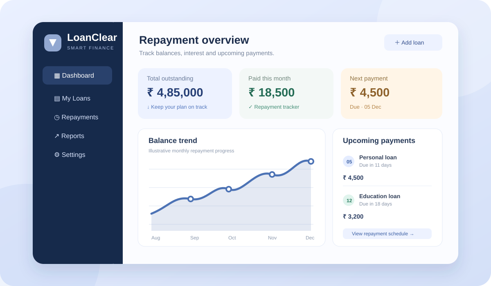
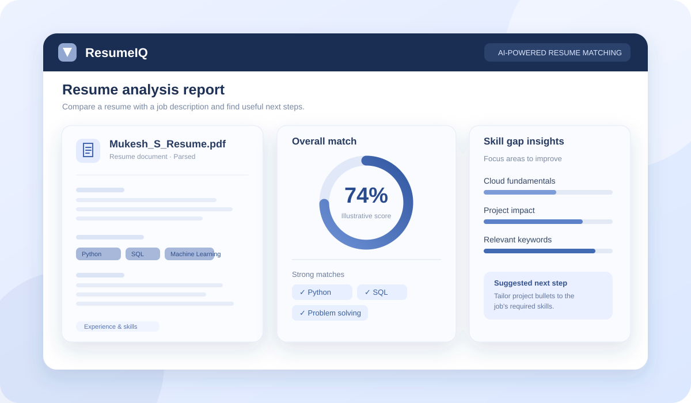
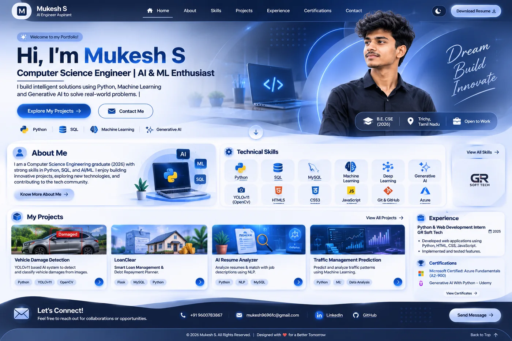

Build with purpose
Turn ideas and requirements into practical Python and web-based applications.
HELLO, I'M MUKESH S
Computer Science Engineering Graduate / Python Developer
I enjoy turning ideas into practical software and exploring how AI can help solve real-world problems. My current focus is Python, computer vision, web development, and cloud fundamentals.
01 ABOUT ME
I'm a 2026 Computer Science Engineering graduate from K. Ramakrishnan College of Technology, with a foundation in Python, SQL, and web development.
I'm interested in building straightforward, useful applications and learning how AI techniques can make them smarter. I like breaking problems into manageable steps, testing ideas, and improving through hands-on practice.
At the start of my professional journey, I'm excited to contribute to a team, learn from experienced developers, and grow through real-world software projects.
See my journeyTurn ideas and requirements into practical Python and web-based applications.
Learn through AI, machine learning, computer vision, and focused experimentation.
Grow through feedback, debugging, documentation, and consistent practice.
02 SKILLS & TECHNOLOGIES
A growing toolkit for software development, data, AI, and cloud fundamentals.
Writing and structuring code
Exploring intelligent applications
Organizing and exploring data
Building, testing, and collaborating
03 SELECTED WORK
A selection of practical projects across AI, web applications, and frontend development.
Exploring image-based vehicle damage detection with YOLOv11 and OpenCV to identify visible damage and support an initial damage assessment workflow.

FINANCE WEB APP02A Python and Flask loan-management application designed to help record balances, track interest and due dates, and organize repayment history.

NLP / AI CONCEPT03A Python-based resume-analysis project designed to compare resume content with a job description and highlight relevant skills, gaps, and match information.

DESIGN + DEVELOPMENT04A responsive portfolio built to present my skills, projects, education, certifications, and contact details through a clear, accessible interface.
Project thumbnails are illustrative previews. Project status is labelled individually; live demos and public repositories can be added when available.
04 EXPERIENCE & EDUCATION
Building a strong foundation through education, practical tasks, and continuous learning.
Next step
Contribute to a team, learn from real projects, and grow into a stronger developer.
GR Soft Tech
Worked on web-based applications using Python, HTML, CSS, JavaScript, and SQL; implemented and tested application features as part of practical development tasks.
K. Ramakrishnan College of Technology · Anna University
Developed a foundation in programming, databases, software development, and computing concepts.
Microsoft Certified
Foundational learning across cloud concepts, Azure services, and cloud governance topics.
05 CONTINUOUS LEARNING
Certifications and courses that support my development journey.
AZ-900 · Cloud concepts and core Azure services
Coursework in generative AI concepts and Python
06 GET IN TOUCH
I'm interested in entry-level opportunities where I can contribute, learn from a team, and grow as a developer. Feel free to reach out.